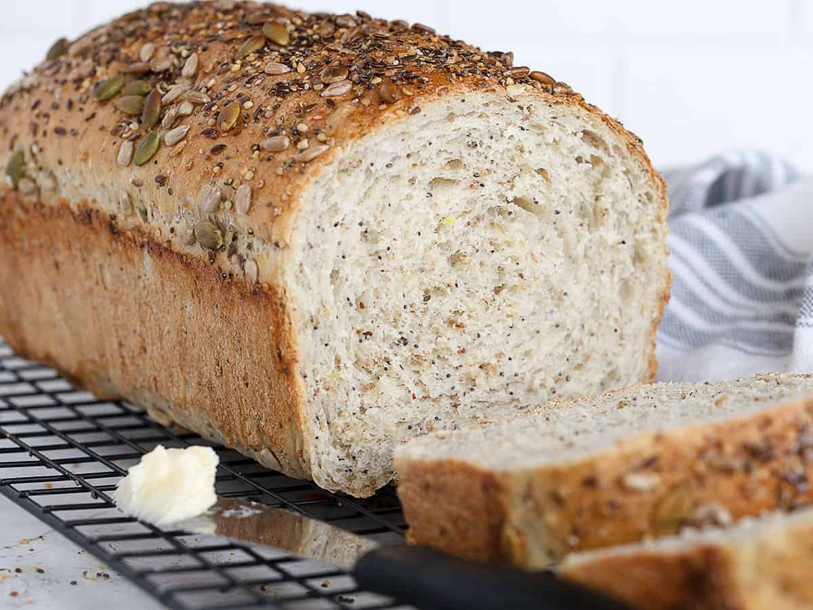

Description
This homemade soft multigrain bread is prepared with multigrain hot cereal mix, such as 5 grain, 7 grain or 10 grain cereal. Whole or quick oats are an excellent option, too. It’s soft and fluffy like regular white sandwich bread, but has a hearty and satisfying flavor. Either instant or active-dry yeast work and you can even turn this dough into multigrain rolls.
Learn to bake homemade bread. I’ve noticed that’s a common baking goal at the start of each year. Today I’m sharing a new homemade bread recipe, one I’ve been perfecting for months. Using my regular white sandwich bread as the starting point for this new variation, I finally mastered a multigrain bread that’s both soft and sturdy. If you love homemade bread and crave added texture, you’ll enjoy this multigrain loaf. Bonus: You can use this dough for homemade rolls, too!
Ingredients
- 1/2 cup (60g) dry multigrain cereal mix or rolled oats
- 1 and 3/4 cups (410ml) water
- 2 and 1/4 teaspoons (7g) instant or active dry yeast
- 3 Tablespoons (37g) packed light or dark brown sugar
- 3 Tablespoons (45g) unsalted butter
- 1 and 1/2 teaspoons salt
- 3 and 1/3 cups (433g) bread flour
- optional: 1/2 cup (60g) sunflower seeds, chopped walnuts/pecans, pepitas, raisins, dried cranberries
Steps
- Prepare the dough: Place cereal mix in a large heatproof bowl (you can also use the bowl of your stand mixer). Pour boiling water on top. Let the mixture cool until a digital thermometer reads about 110°F (43°C). This usually takes 20 minutes. Pay attention to the temperature because if it’s too hot, it will kill the yeast. If it became too cool, however, it’s not a problem– the dough may just take a few extra minutes to rise.
- Whisk the yeast, sugar, and all of the warm water/cereal mixture in the bowl of your stand mixer fitted with a dough hook or paddle attachment. Cover and allow to sit for 5-10 minutes or until foamy and bubbly on the surface.
- Add the butter, salt, and 1 cup (about 130g) flour. Beat on low speed for 30 seconds, scrape down the sides of the bowl with a rubber spatula, then add another cup of flour. Beat on medium speed until relatively incorporated (there may still be chunks of butter). Add all of the remaining flour and the seeds/nuts (if using), then beat on medium speed until the dough comes together and pulls away from the sides of the bowl, about 2 minutes. If it seems too sticky, add more flour, 1 Tablespoon at a time until it begins to pull away from the sides of the bowl.
- Knead the dough: Keep the dough in the mixer (and switch to the dough hook if you used the paddle) and beat for an additional 2 minutes OR knead by hand on a lightly floured surface for 2 minutes. Dough is soft, yet heavy.
- 1st Rise: Lightly grease a large bowl with olive oil or nonstick spray. Place the dough in the bowl, turning it to coat all sides in the oil. Cover the bowl with aluminum foil, plastic wrap, or a clean kitchen towel. Allow the dough to rise in a relatively warm environment for 1-2 hours or until double in size.
- Shape the bread: When the dough is ready, punch it down to release the air. Lightly flour a work surface, your hands, and a rolling pin. Roll the dough out into a large rectangle, about 8×15 inches. It does not have to be perfect– in fact, it will probably be rounded on the edges. That’s ok! Roll it up into an 8 inch log and place in the prepared loaf pan.
- 2nd Rise: Cover shaped loaf with aluminum foil, plastic wrap, or a clean kitchen towel. Allow to rise until it’s about 1-2 inches above the top of the loaf pan, about 1 hour.
- Bake the bread: Bake for 35-40 minutes– if you notice the top browning too quickly during bake time, loosely tent the pan with aluminum foil. How to test for doneness– give the loaf a light tap. If it sounds hollow, it’s done. For a more accurate test, the bread is done when an instant read thermometer reads the center of the loaf as 195°F-200°F (90°C-93°C).